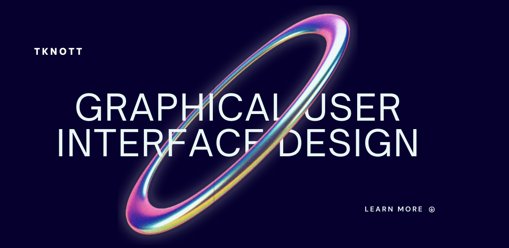

Featured Product
Software Graphical User Interface Design, 2023
This GUI was designed for XCorp’s new in-house integrated development environment (IDE). The GUI allows users to easily manipulate software programs while being easy on the eyes. Reach out today for a consultation.
Visit the link below or contact me directly: View Project Contact Me
Biography
6-year veteran in the Air National Guard looking to broaden my horizons as a software developer and bring creativity back into my life. I enjoy outdoor activities such as biking, rock climbing, and chilling on the beach with various interests spanning from global geopolitics to woodworking. My aim in life is to obtain a remote job in programming and explore the country in my van! My favorite color is orange and favorite foods gotta be anything drenched in gorgonzola cheese sauce.